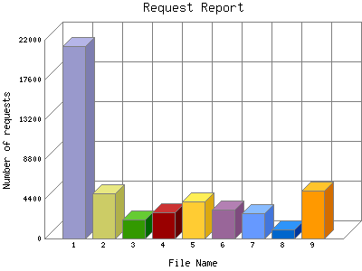

Analog 5.24
Analog 5.24 Report Magic for Analog 2.13
Report Magic for Analog 2.13The Request Report identifies the most popular web pages on the site and how often they were accessed.
This report is sorted by number of requests.

| File Name | Number of requests | Number of requests in the last 7 days | Percentage of bytes transferred in the last 7 days | |
|---|---|---|---|---|
| 1. | /default.aspx | 21,285 | 171 | 46.87% |
| 2. | /aboutme.aspx | 4,990 | 48 | 15.62% |
| 3. | /contactme.aspx | 2,104 | 16 | 4.2% |
| 4. | /expandedduties.aspx | 2,901 | 13 | 4.4% |
| 5. | /faq.aspx | 4,059 | 12 | 4.97% |
| 6. | /dentistinfo.aspx | 3,182 | 11 | 3.16% |
| 7. | /studentprofiles.aspx | 2,846 | 11 | 13.33% |
| 8. | /gallery.aspx | 1,034 | 7 | 7.99% |
| 9. | /calendar.aspx | 5,259 | 0 | 0% |
This report was generated on August 28, 2011 02:33.
Report time frame August 1, 2008 06:00 to August 28, 2011 04:03.
| Web statistics report produced by: | |
| Analog 5.24 | Report Magic for Analog 2.13 |